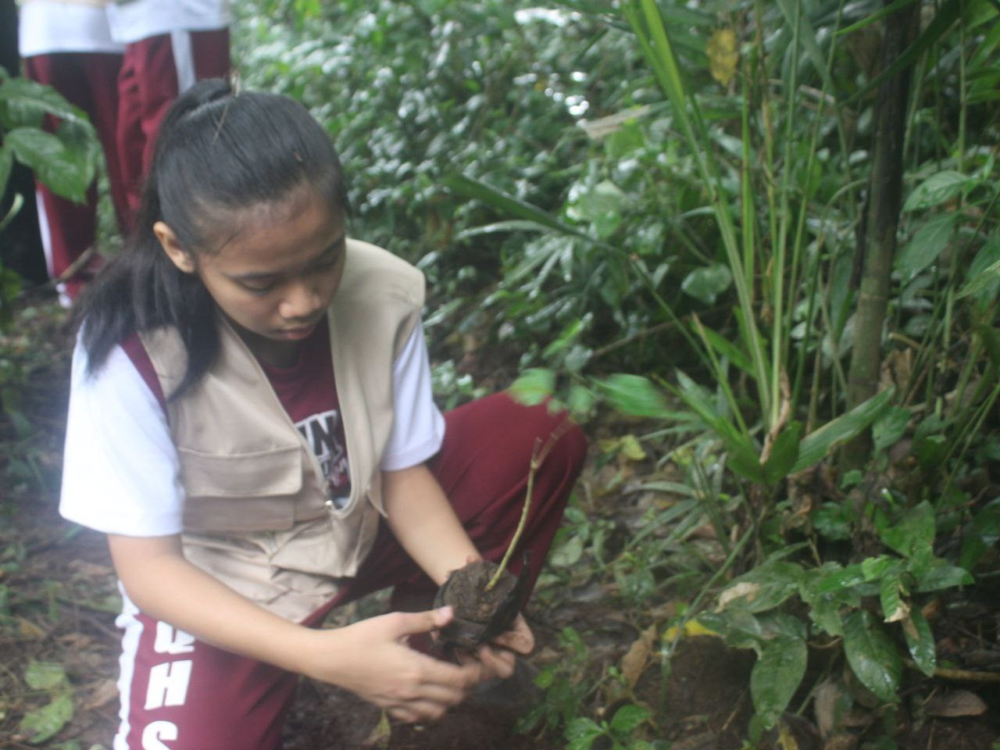
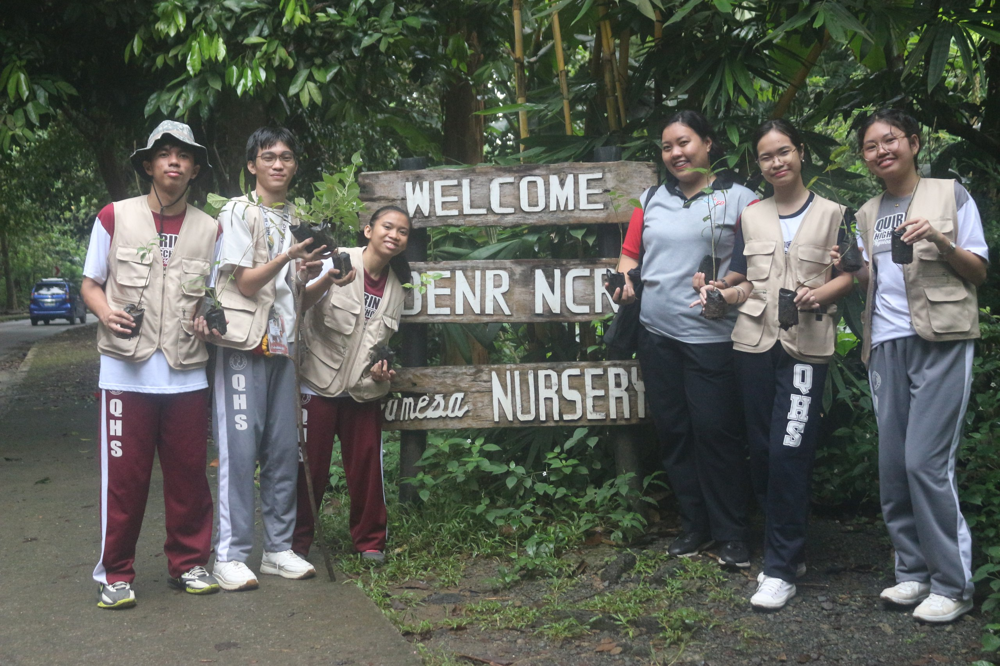
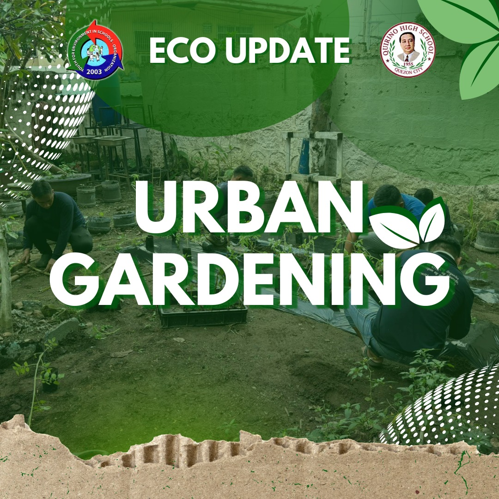
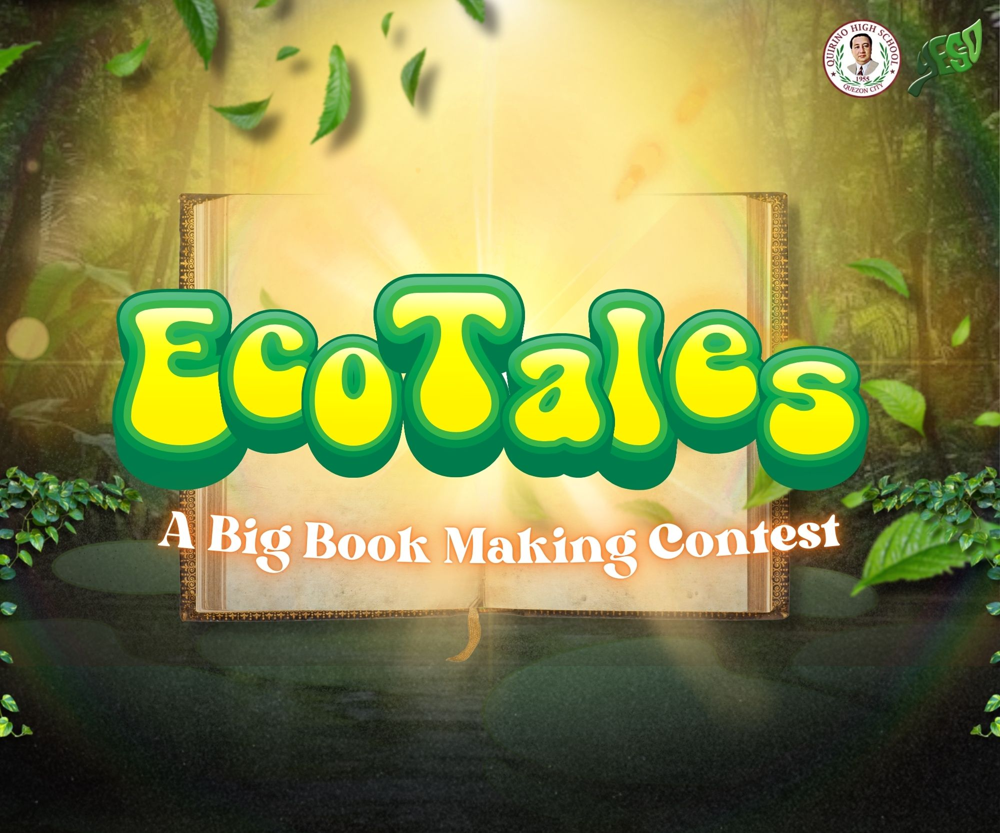

About
Click the card to reveal the answer.
What is iamtheCODE?
Coding Sessions


Meet Our Team
School Head

Ms. Carolyn C. Simon
Head Teacher
Ms. Evelyn B. Tumbado
ICT Coordinator
Mr. Reynold Lorens Acal
Teacher Facilitator
Ms. Maria Theresa B. Baltazar
Team Leader

Nathalie R. Arcillas
Members

Jonairah D. Comacasar
Alexzandra T. Collante

Jarhed Lei C. Notario
Our SDG Project
Solar Panels
Solar Panels
........
Project ReLeaf
Project ReLeaf
.....

Waste Segregation
Waste Segregation
.....


ACTIVITIES
Tree Planting
 
Click photo for more information.
Urban Gardening
Click photo for more information.
SEMINARS

Click photo for more information.
CONTESTS
Click photo for more information.
🌿 Interactive Activity 🌎
Our Journey
Quirino High School participated in the iamtheCODE pilot program, a global initiative dedicated to empowering young women through coding, digital literacy, and STEAMD education. As one of the pilot schools, Quirino High School provided its students with the opportunity to gain hands-on experience in coding, technology, and collaborative problem-solving over a 12-week program.
Timeline
Sample Outputs


Featured Story
What is iamtheCODE?
Learnings

Module 1: Introduction
Module 2: Introduction
Module 3: Introduction
Module 4: Introduction
Module 5: Introduction
Module 6: Introduction
Module 1: Introduction
Module 2: Introduction
Module 3: Introduction
Module 4: Introduction
Module 5: Introduction
Module 12: Introduction
Student Testimonials
Here are some inspiring reflections from our learners.

"IamTheCode taught me how powerful coding can be to change the world!"
– [Name]
"Through this journey, I learned teamwork, patience, and purpose."
– [Name]Gallery
Explore our documentation through images and our short video about the IamTheCode journey.
Our Photos


Our Journey Video
FAQs
Contact
Quirino High School
Email: quirinohighschool@gmail.com
Acknowledgment
We extend our sincere appreciation to the Department of Education, Her Legacy Project Foundation (HLPF), Software Research (QSR), and the Education Program Specialists (EPS) for their continued support, guidance, and collaboration in making this initiative a success.
We also thank the iamtheCODE Program and Quirino High School for their strong partnership and commitment to empowering learners through technology and innovation. Our heartfelt gratitude is extended to our School Head, Ms. Carolyn C. Simon, and our Head Teacher, Ms. Evelyn B. Tumbado, for their leadership and encouragement throughout this project.
We also extend our gratitude to the QHS YES-O Club for their support and active involvement. Their contributions strengthened our Sustainable Development Goal (SDG) initiatives and our advocacy for environmental awareness and sustainability.
Lastly, we express our appreciation to our Teacher Facilitator, Ms. Maria Theresa B. Baltazar, to our ICT Coordinator, Mr. Reynold Lorens Acal, and to our fellow iamtheCODE students, whose dedication, teamwork, and enthusiasm greatly contributed to the success of this program.